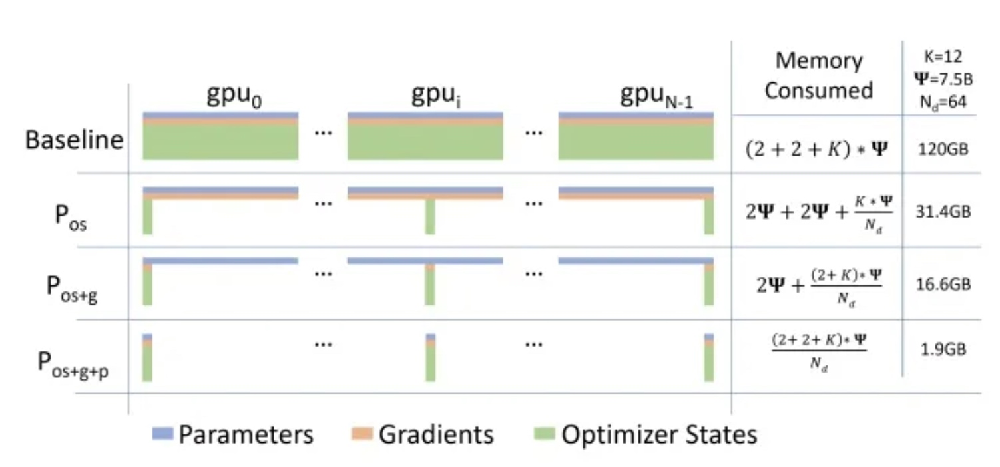

1 通信原语
BroadCast
节点将自己的数据原封不动的传给其他节点。
通常用于LLM分布式训练时，网络参数的初始化。
Scatter
节点将自己的数据经过切片后分别传给其他节点。
一般出现在数据并行的数据分配起步阶段。
Gather
多个节点将不同的数据发送给同一节点。
Scatter的反过程。
Reduce
一系列简单运算操作的简称。
在每个节点上获取一个输入元素数组，经过操作后得到精简的更少的元素。
All Reduce
单节点Reduce+Broadcast。
All Gather
All-2-All
全交换操作：每个节点都可以向别的节点发送数据，也可以接收任意节点的数据。
不同节点向某一节点收集到的数据不同（因为该节点的数据有很多，不像All Gather本来只有一个数据）
2 数据并行
2.1 原因
单张GPU无法存储训练样本的数据。
2.2 DP: Data Parallel
2.2.1 图示

2.2.2 线程通信
只用于单机内部多块GPU通信，并不会跨机器节点进行通信。
2.2.3 流程
将整个minibatch的数据加载到主线上，然后再将更小批次的sub-minibatches的数据分散到整个机器的各块GPU中进行计算：
主GPU（GPU1）负责持有模型，并且copy到其他的模型里，而且训练的mini-batch也是先给到GPU1，然后再通过Scatter的通信，将minibatch进一步打散成sub-minibatches，然后不同的sub-minibatches给到不同的GPU来进行训练处理。
- 在前向计算时，每个GPU自己计算自己得这一部分数据，然后GPU1通过gather来收集所有的输出，再进行统一的损失计算；
- 把损失在 GPU 之间 scatter，在各个GPU之上运行后向传播，计算参数梯度；
- 在 GPU1 之上归并梯度，进而更新梯度参数，更新GPU1上的模型权重由于模型参数仅在GPU1上更新，而其他从属GPU此时并不是同步更新的，所以需要将更新后的模型参数复制到剩余的从属 GPU中，以此来实现并行。
2.2.4 缺陷
通信局限性和低效性。
2.3 DDP: Distributed Data Parallel
2.3.1 图示
2.3.2 进程通信
不需要依赖某个GPU为主GPU。
- DDP每个GPU都拥有模型的一个副本，所以不需要拷贝模型。rank为0的进程会将网络初始化参数broadcast到其它每个进程中，确保每个进程中的模型都拥有一样的初始化值，广播的也只是模型的权重而不是模型本身，大大降低了跨节点拷贝的带宽。
- 加载数据阶段。DDP 不需要广播数据，而是使用多进程并行加载数据。在 host 之上，每个GPU的worker进程都会把自己负责的数据从硬盘load到显存。DistributedSampler 保证每个进程加载到的数据是彼此不重叠的。这样就免除了一次Scatter的操作，进一步提升了效率。
- 前向传播阶段。在每个GPU之上运行前向传播，计算输出。每个GPU都执行同样的训练，所以不需要有主 GPU。计算损失，也都是在每个GPU之上独立计算损失。
- 反向传播阶段。运行后向传播来计算梯度，在计算梯度同时也对梯度执行all-reduce操作。
- 更新模型参数阶段。因为每个GPU都从完全相同的模型开始训练，并且梯度被all-reduced，因此每个GPU在反向传播结束时最终得到平均梯度的相同副本，所有GPU上的权重更新都相同，也就不需要模型同步了，又比DP节省了不少的带宽和时间。
3 模型并行
3.1 产生原因
单张GPU无法存储模型的完整参数。
3.2 PP: Pipeline Parallel
3.2.1 传统
此时同一时刻只有一个GPU在工作，造成极大的算力浪费。
把一个参数量较大的模型按照不同的层进行划分，将多个模型的层尽可能均匀的分布在不同的GPU显存上，来起到装载更大模型的能力。
3.2.2 改进：Gpipe流水线并行
把一个Mini-bacth，拆解成更小的Micro-batches
。
当F1也就是前向计算的第一个Micro-batch1被GPU0计算完毕，它就会传递到模型的下一层GPU1，然后GPU0可以继续计算Micro-batch2,以此类推，在同一个计算时间内，尽可能的压榨算力获得更高的性能。
3.2.3 改进：1F1B
也要注意多版本控制，防止传播时采用的权重错误。
3.3 TP: Tensor Parallel
3.3.1 图示
基本思想：将模型的参数纵向切开，放到不同的GPU上进行独立计算，最后在做聚合。
3.3.2 要求
- 算子具有可以并行的条件，比如MatMul或者矩阵点乘；
- 算子中其中一个输入来自于parameter。
4 内存优化
4.1 重计算
4.1.1 产生原因
模型训练需要反向传播，其中会用到正向传播中很多的中间量，因此通常模型会将需要用到的中间量在前向传播时持续保留，直到反向传播时再将其调用，这会占用很大的内存。
4.1.2 解决方法
不保留前向传播中需要在后端被用到的参数，而是在后端是重新对其进行计算。
4.1.3 本质
4.1.4 图示
4.2 优化器优化ZERO
4.2.1 图示

4.2.2 过程
- 优化器状态切分：切分优化器状态到各个计算卡中，在享有与普通数据并行相同通信量的情况下，可降低4倍的内存占用；
- 梯度拆分：在优化器状态切分的基础上，进一步将模型梯度切分到各个计算卡中，在享有与普通数据并行相同通信量的情况下，拥有8倍的内存降低能力；
- 参数切分：在梯度拆分的基础上，将模型参数也切分到各个计算卡中，内存降低能力与并行数量成线性比例，通信量大约有50%的增长。
4.3 混合精度训练
4.3.1 思想
采用半精度浮点数float16代替一些全精度浮点数float32的操作，节约内存，计算速度变快。
4.3.2 问题1
数据溢出：fp16的动态范围远远小于fp32的，很容易出现数据的下溢出，造成值为0的错误。
解决方法——Loss Scale：对计算出来的Loss乘以一个尺度因子scale，使其变大到能让fp16正确表示，在最终传播中再除以该scale，恢复出正确的梯度。
4.3.2 问题2
舍入误差：fp16在相加过程中，若某个加数小于当前数量级的最小间隔，则会导致出现加法错误，该加数会被抹掉。
解决方法：
- 权重备份：将所有待更新的参数都用fp32进行额外备份，采用fp16进行计算，但在最后参数更新时，使用fp32对fp16得到的结果进行参数更新，防止舍入误差。
- 提高算数精度：用fp16进行矩阵乘法和存储，用fp32进行加法计算。